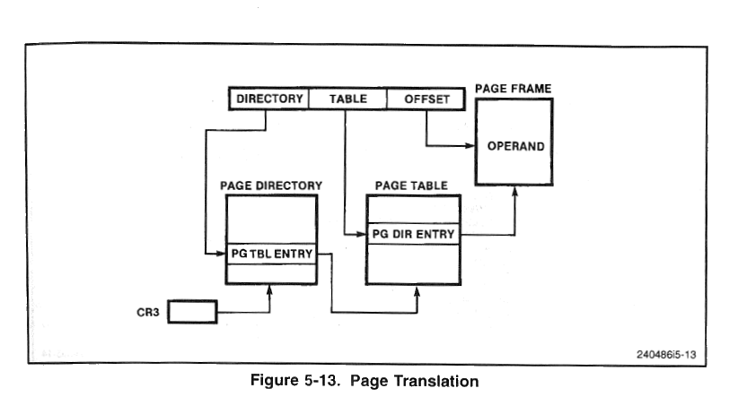
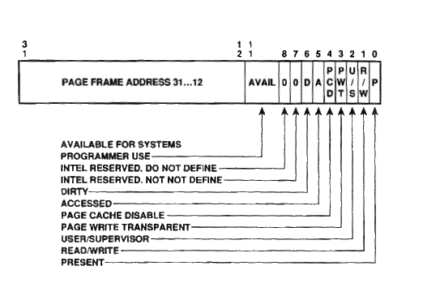
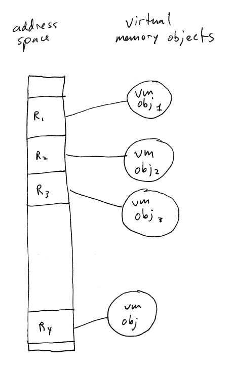

Recall that a single array of page table entries would be quite
large: 4 MB for a 2^32 address space. In addition, most processes
use only a small fraction of the address space: a few megabytes or
tens/hundreds of megabytes. This means that a sparse data
structure would be more appropriate.
Most CPU architectures address these concerns by using hierarchical page tables.
This means that the page tables defining an address space look more
like a tree.
Example: the x86 uses two-level page tables. The root level is
the page directory. The page directory is an array of page
directory entries, or PDEs. Because the page directory is one
page (4 KB) in size, and each PDE is 4 bytes in size: so, the page
directory contains 1024 PDEs.
Each PDE stores the frame number of a page table. Like the
page directory, each page table is one page (4 KB) in size. A
page table is an array of 4-byte page
table entries (PTEs). Each PTE contains the frame number
of a single frame.
This leads to the following translation system [source: Intel 486
Programmer's Reference Manual]:

The 20 bit page number in a virtual address is now divided into two
parts: the PDE number, and the PTE number, each of which is 10 bits.
The PDE number specifies an index in the page directory. The
MMU examines that entry in the page directory to determine the frame
number of the frame containing the page directory.
The PTE number specifies an index in the page table located by the
PDE number. The MMU examines the page table to look up a frame
number. This frame number is then copied into the physical
address.
This scheme would be far to slow if it had to be carried out for
each memory reference. A hardware cache called the TLB
(Translation Lookaside Buffer) stores the most recently used
translations of virtual page numbers to frame numbers. Every time
this mapping is looked up from the page tables, a TLB entry is created
to record the mapping. Subsequent virtual memory addresses
containing the same virtual page number can be looked up in the TLB,
which is much faster than main memory.
As we mentioned, page tables on the x86 are built out of several
structures and data types: a page directory, page tables, page
directory entries (PDEs), and page table entries (PTEs).
Let's look at the precise structure of these structures.
As mentioned the page directory is an array of 1024 PDEs. Each
PDE is exactly 4 bytes in size, so the entire page directory fits in
one frame of memory.
Each PDE defines the virtual to physical address mapping for 1/1024
of the overall address space. 4G / 1024 = 4,194,304 = 4M = 2^22
bytes.
As mentioned, each PDE contains the physical address of one page table. The page table has a format virtually identical to that of the page directory. Each PTE contains the physical address of one frame of memory
The format of PDEs and PTEs is this [source: Intel 486 Programmer's Reference Manual]:
.
[Explain meaning of fields of PDE/PTE.]
Present:
1 if the page table or page is mapped, 0 if not. Memory reference
to an address with a not-present page table or frame will cause a page fault.
Note that when a PDE or PTE is marked as
not present, then all of the other bits of the entry are available to
be used by the operating system.
Read/Write:
If 0, addresses represented by the page table are read-only.
User/supervisor:
If 1, addresses covered may be accessed by user processes. If 0,
may only be accessed by kernel.
Accessed:
Set to 1 if an address covered is accessed by a load or store
instruction. Useful in implementing LRU schemes.
Dirty:
Set to 1 if an address covered is modified by a store
instruction. Useful for deciding whether or not a page needs to
be written to disk when stealing a page.
Avail:
these bits may be used by the operating system to store
information. A good example would be a flag that is set to 1 to
mark pages that have been written to disk.
Page
frame address: the address of a frame of physical memory.
In the case of a PDE, the frame is a page table. In the case of a
PTE, the frame is physical memory mapped into the address space.
The only way in which PDEs and PTEs differ is that PDEs do not
support the dirty bit.
On the x86, several special CPU registers are used for paging.
The CR3 register contains
the address of the page directory. Because it is the page
directory that ultimately determines the structure of an address space,
you can think of CR3 as selecting which address space is currently in
effect.
The CR2 is the page fault
address register. When a page fault occurs, it contains the
memory address that was referenced by the instruction that caused the
fault. When a page fault causes a transition to the kernel's page
fault handler, the handler can look in the CR2 register to find out
what unmapped page was accessed. The kernel can then consult the
PDE or PTE of the unmapped page, and based on information stored in
that entry, attempt to handle the fault. One possibility here is
that the fault happened because of a PTE that was marked not present,
and the kernel can use information stored in the entry to determine
where on disk the data for the page is stored.
The CR0 register contains a
number of flags controlling the behavior of the CPU. The flag
stored in bit 31 is the paging flag. When set to 1, the CPU uses
page tables to translate all referenced memory addresses.
Basic concept of virtual memory:

Each address space is divided up into regions. Each region is
associated with a virtual memory
object, or VM object.
A VM object is a backing store for data strored in the corresponding
region.
In this model, physical frames of memory simply act as a cache for the data in a VM
object. In other words, mapping a physical page of memory into a
region of the address space is useful to improve performance, but in
general it is not necessary to have a full set of frames mapped into
each region. The OS kernel uses page faults to detect when a
physical page is needed for a particular address within a region.
When a frame is mapped into a region for the first time, the data for
that range of addresses is loaded from the VM object.
In this model, the OS can work perfectly well when the collective size of all regions in all address spaces exceeds the amount of physical memory. In this situation, the OS kernel may occasionally need to steal frames from one region in order to use them in another region where a page fault has occurred. When a frame is stolen, the OS kernel checks to see if the frame contained any modified data. If so, the data stored in that frame is written back to the VM object.
Viewed from this perspective, the most important part of a virtual memory system is the VM objects, since they represent the data that makes up the address space. So, what are VM objects? In general, there are many different kinds of VM objects.
The most basic VM object is an anonymous swap-backed VM object. This means that the VM object corresponds to a region of the OS kernel's swap file. The swap file is a chunk of disk space that serves as a backing store for address space regions. (Note that "swap file" is a misnomer. It should really be called a "paging file", but it's called a swap file for historical reasons.)
Typical uses of an anonymous swap-backed
VM object would be for the heap and stack regions of a process address
space. The data stored in these regions need to be persistent as
long as the process runs, but do not have any initial contents.
Generally, the data for such regions will consist entirely of zeroes.
Another important VM object is a random-access
file. These are simply files whose data is stored in a
filesystem on disk somewhere. Basically all modern operating
systems support using files as VM objects. When a process creates
a virtual memory region whose backing store is a file, we say that the
process is doing memory-mapped
file I/O. Regions backed by a file can be read-only or read-write.